질문부터 바꿨어요
출발점은 양이에요. 왼쪽 큰 숫자는 앤트로픽 모노레포에 하루에 합쳐지는 변경이에요. 5월 2,500건쯤에서 9월 3만 건 이상이 됐어요. 그 아래 막대가 말하듯 한 줄씩 읽기는 사실상 불가능해요. 오른쪽 두 칸은 Claude Code 코드베이스의 6월과 9월 비교예요. 머지된 PR은 두 배 이상 늘었고, 되돌린 비율은 40% 넘게 줄었어요.
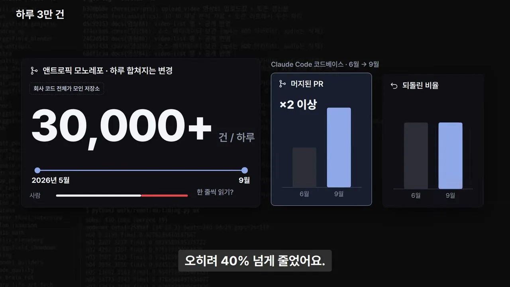
출처는 화면에 뜬 글이에요. 상단 표시줄에 claude.dev Engineering과 2026.10.15가 보여요. 흰 테두리 칸이 저자 칸이고, Addy Osmani, Morgan Westlee Lunt, Qing Wang 세 사람이 썼어요.
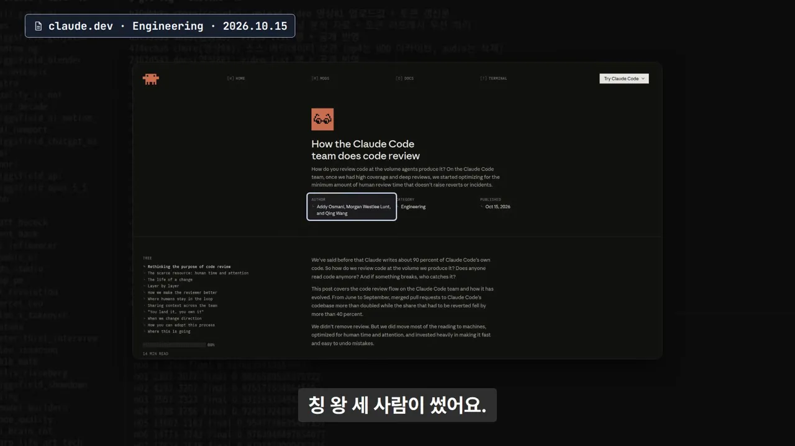
팀이 먼저 버린 질문은 "사람이 이 코드를 읽었나?"예요. 화면에서 이 문장에 빨간 줄이 그어지고 '부정확한 질문'이라는 표시가 붙어요. 대신 아래 두 칸의 질문을 던져요. 무엇이 잘못될 수 있나, 그리고 그걸 어느 검사가 잡나예요. 잡는 쪽은 자동 검사일 수도, 사람일 수도 있어요.
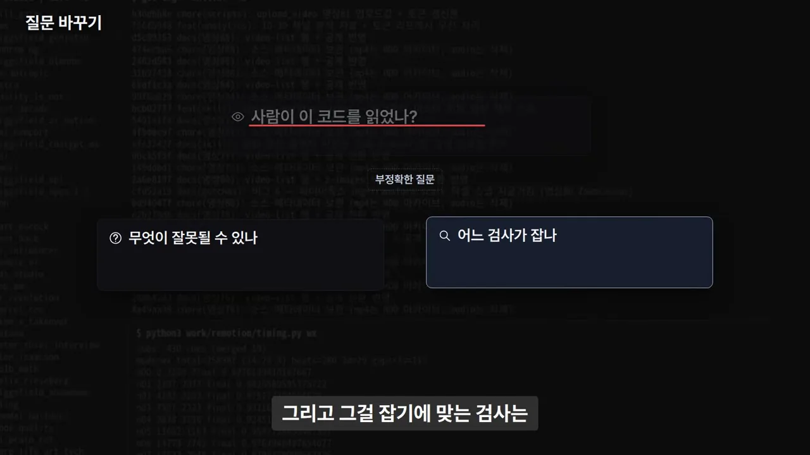
질문이 바뀌니 리뷰 시점도 달라졌어요. 이 그림은 예전 흐름이에요. 코드 작성, PR 올림, 동료 대기를 지나 사용자 앞에 '길 끝의 관문'이 서 있어요. 지금은 글 쓰는 동안 계속 도는 맞춤법 검사에 가까워요. 사람이 보기 전에 대부분의 변경은 이미 Claude가 한 번 이상 리뷰하고 고친 상태예요.
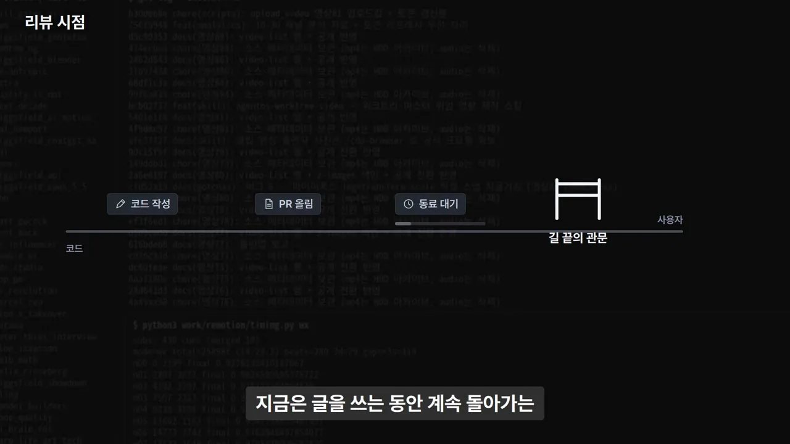
아끼려는 건 사람의 시간과 주의력이에요. 여기엔 리뷰하는 시간과 나쁜 코드가 망가뜨린 걸 고치는 시간이 함께 들어가요. 앞쪽만 줄이고 뒤쪽이 늘면 아낀 게 아니라 옮긴 거예요. 그래서 위쪽 목표는 '사람 최대 1명'이고, 작성자 본인일 수도 있어요. 아래 두 선은 되돌림 비율과 장애 비율이에요. 점선 위로 올라가지 않게 지키는 가드레일이에요.
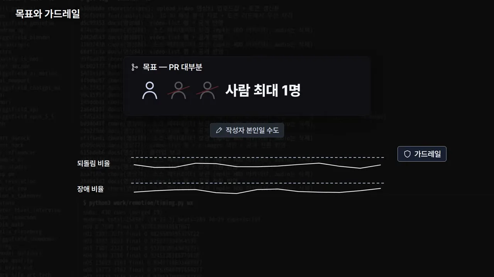
PR 전 검증부터 AI 리뷰까지
변경 하나는 노트북에서 사용자에게 가기까지 일곱 칸을 지나요. 사람 아이콘이 붙은 칸은 다섯 번째인 위험도 승인뿐이에요. 원문 도표에서도 사람이 판단하는 칸은 여기 하나이고, 나머지는 자동 검사와 복구 쪽이에요.
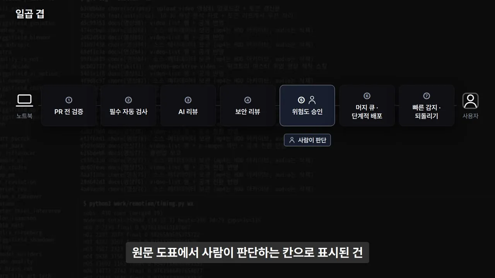
영상은 일곱 겹을 몇 분에 걸쳐 하나씩 설명해요. 겹마다 하는 일을 한 장에 모으면 이래요.
겹쳐 쓰는 이유는 이 그림에 있어요. 일곱 장의 판에 빨간 점이 찍혀 있는데, 점의 위치가 판마다 달라요. 겹마다 잡는 문제와 놓치는 문제가 다르다는 뜻이에요. 맨 아래 점선 칸은 그래도 빠져나간 문제를 받아내는 되돌리기예요.
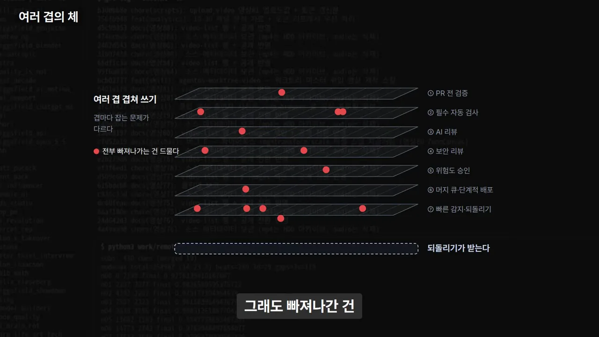
첫 번째 겹, PR 전 검증
첫 겹은 PR이 생기기 전에 시작돼요. Claude에게 직접 돌려 볼 테스트, 빌드, 디자인과 비교할 스크린샷을 줘요. 그리고 '다 했다'는 말 대신 실행 결과를 보여 달라고 해요. 그다음엔 서브에이전트가 맥락이 빈 상태로 변경분을 다시 봐요. Claude Code를 만든 Boris Cherny는 스스로 검증할 수단을 주는 게 아마 가장 중요하다고 했어요. 결과가 두세 배 좋아진다는 추정도 덧붙여요.
리뷰어가 같은 걸 계속 지적하면 근원을 고쳐요. 왼쪽 세 갈래인 스킬, 린트 규칙, 지시 파일이 그 자리예요. 오른쪽은 대표적인 지시 파일 두 개예요. CLAUDE.md는 스택과 관례, 목표와 비목표를 적는 짧은 파일이에요. REVIEW.md는 코드 오너가 쓰고, 문서라면 거짓말, 설정이라면 엉뚱한 곳으로 보내기처럼 실패의 모습을 적어요. 맨 아래 칸은 이름으로 추측하지 말고 파일과 줄 번호를 근거로 대라는 요구예요.
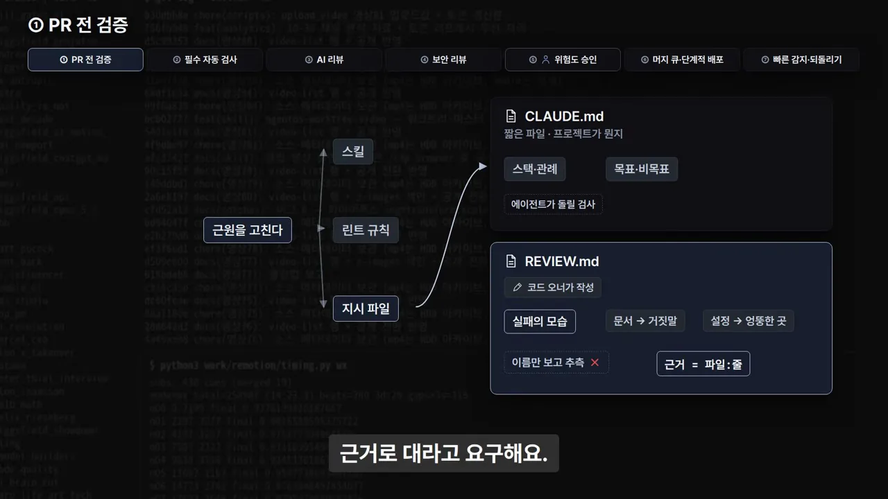
두 번째 겹, 필수 자동 검사
익숙한 린트, 타입 검사, 모든 플랫폼 테스트, 빌드예요. 왼쪽 격자는 평범한 CLI(Command Line Interface) PR 하나가 사람 눈에 닿기 전에 거치는 수십 개 검사를 뜻해요. 오른쪽 PR 템플릿의 질문은 두 개예요. 어떻게 테스트했나, 어떻게 되돌리나예요. 작성은 Claude가 해도 최종 서명은 책임지는 사람이 해요.
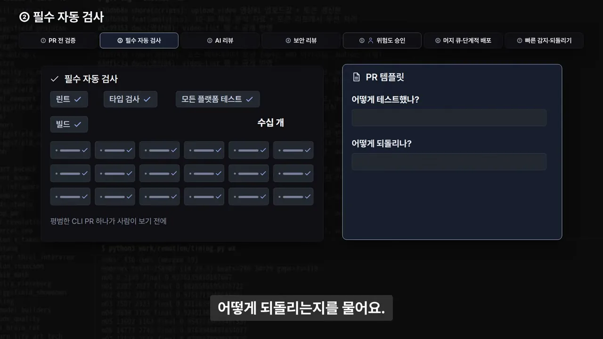
세 번째 겹, AI 리뷰와 투표
모든 PR에 사람보다 먼저 Claude 리뷰가 붙어요. 변경분을 저장소 전체와 PR의 의도에 비춰 읽고, 문제를 풀었는지, 시스템에 맞는지, 다른 걸 깨뜨리지 않는지 물어요. 위쪽 막대의 눈금 16%와 54%가 연구용 미리 보기 시작 전후예요. 실질적인 코멘트를 받는 사내 PR의 비율이에요. 아래 두 칸처럼 1,000줄 넘는 PR은 대부분 지적을 받고, 작은 PR은 대부분 그냥 통과해요.
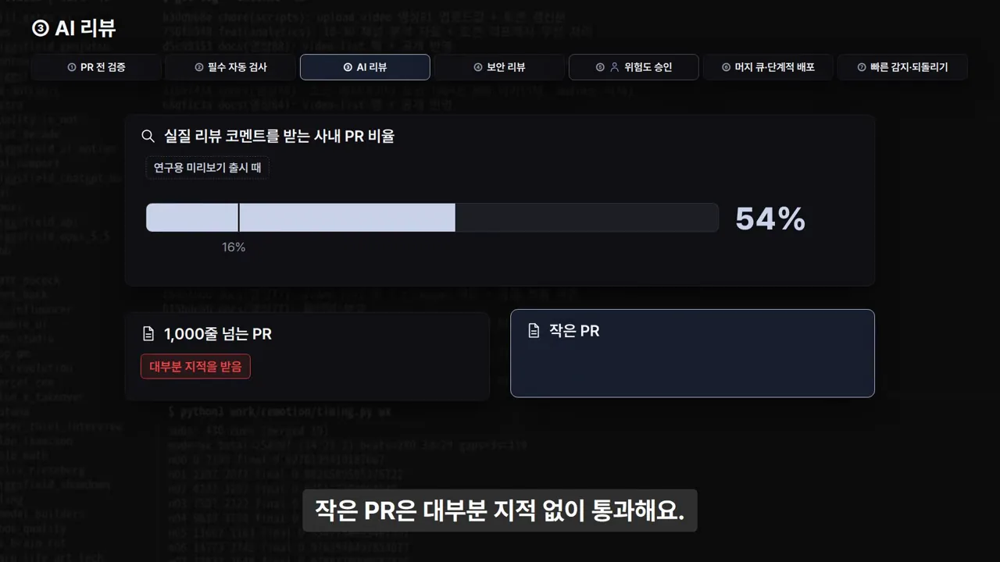
지적을 거르는 방식이 흥미로워요. 위쪽 판에서 여러 에이전트가 버그 A, B, C와 스타일, 정리 지적을 찾아요. 그 아래 '다른 에이전트 그룹'이 지적 하나하나에 투표해요. 왼쪽 '진짜' 칸에 표가 충분히 모여야 PR에 올라가요. 가운데 '스타일' 칩에 붙은 빨간 '기각'이 버려지는 지적이에요.
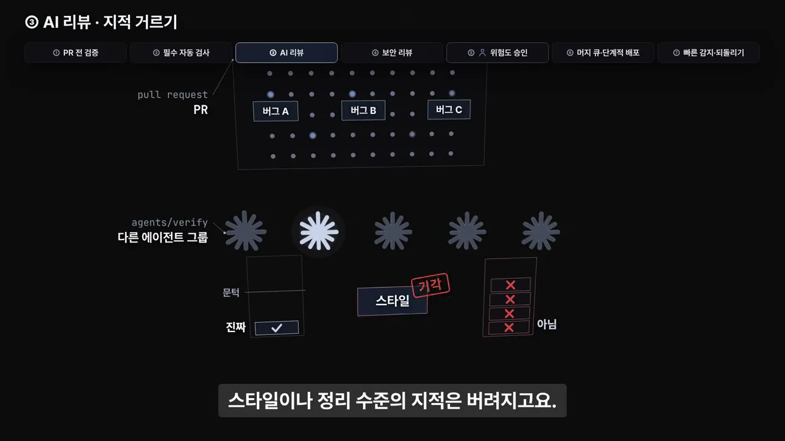
살아남은 지적엔 꼬리표가 붙어요. 판 위쪽의 #중요, #사소함, #원래 있던 문제예요. 버그 C 옆 설명처럼 이 PR이 만든 버그가 아니면 작성자 잘못처럼 보이지 않게 하려는 장치예요.
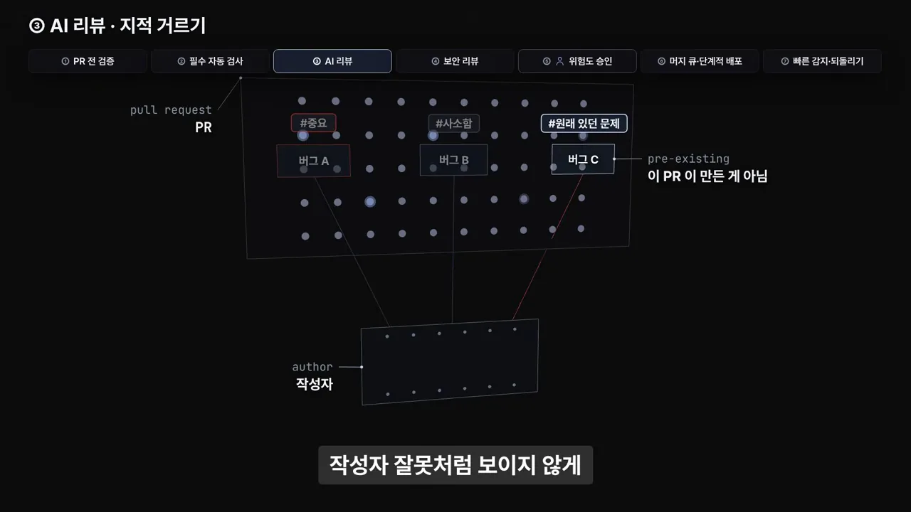
모든 지적엔 답해야 해요. 왼쪽을 보면 버그 A와 B는 '고침', 원래 있던 버그 C는 '이유 달고 닫음'이에요. 오른쪽 달 그림은 밤사이 에이전트가 수정을 가져가는 상황이고요. 작성자가 아침에 오면 PR이 이미 한 라운드를 더 돈 상태예요.
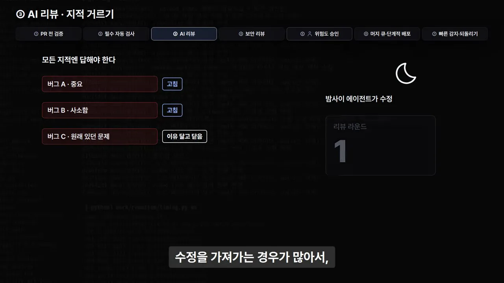
밤새 50라운드 돈 리뷰
작성도 에이전트, 리뷰도 에이전트면 지적과 수정이 끝없이 이어질 수 있어요. 화면의 두 판이 작성 에이전트와 리뷰 에이전트이고, 오른쪽 위 계기판이 리뷰 라운드 수예요. 실제로 CLI 쪽 PR 하나가 밤새 50라운드를 넘겼어요. 작성자가 멈출 때까지요.
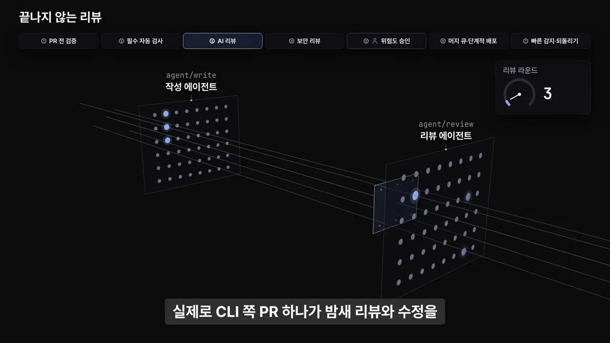
팀은 리뷰어가 계속 지적한 부분을 git blame으로 따져 봤어요. 오른쪽 위 수치 59%가 그 결과예요. 왼쪽 라벨처럼 첫 리뷰 때부터 이미 있던 코드였어요. 새 버그는 거의 못 찾고, 옛날 버그를 라운드마다 몇 개씩 더 찾고 있었던 거예요.
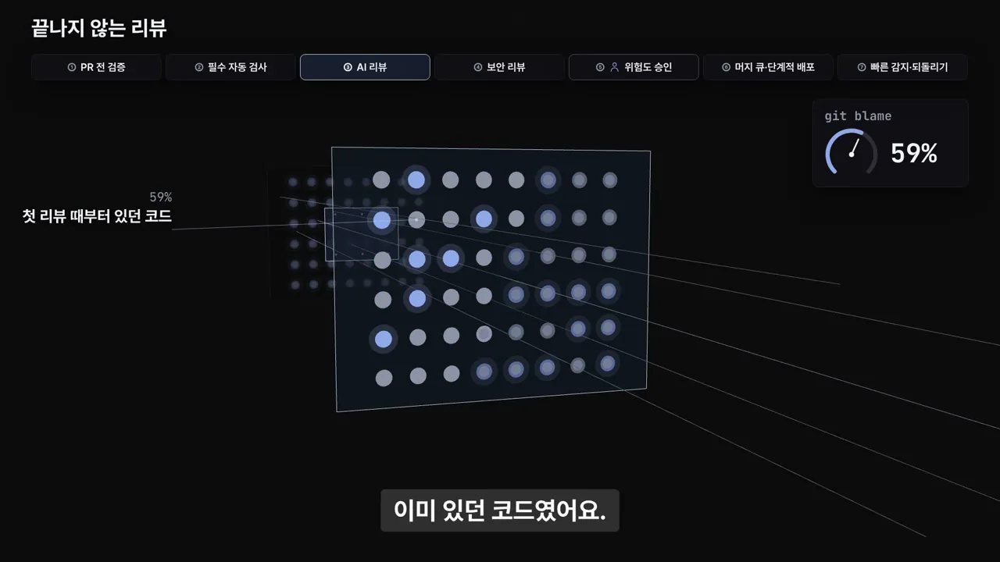
노이즈 문제이기도 해요. 왼쪽 위 칸처럼 사람은 사소한 지적을 몇 초 만에 넘겨요. 에이전트는 고리를 따라 돌아요. 사소한 지적을 고치면 새 커밋이 생기고, 커밋이 생기면 리뷰가 한 번 더 돌아요. 가운데 '스스로 키운 일'이라는 칩대로, 팀도 여러 라운드를 기본으로 돌리는 데 익숙해져 있었다고 인정해요.
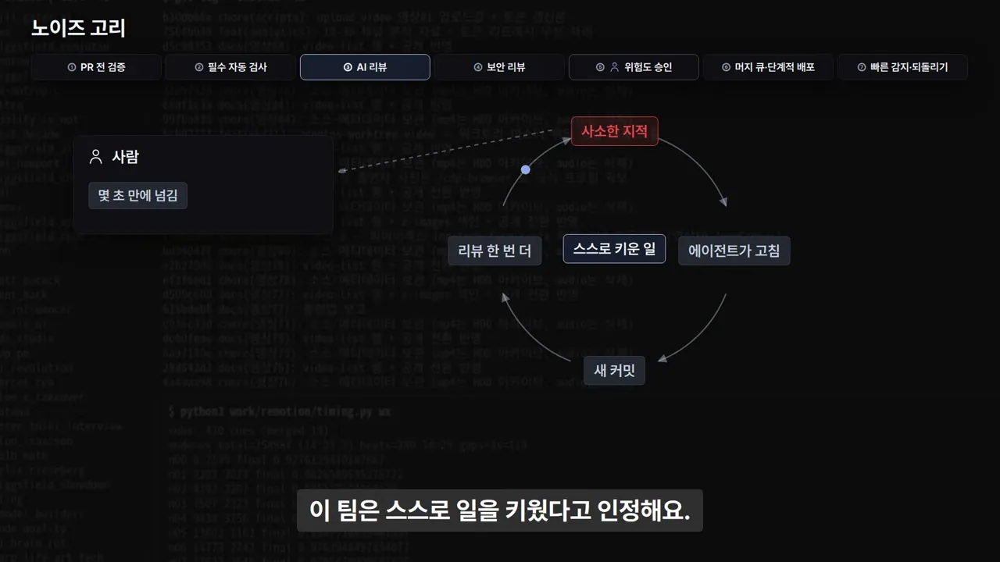
그래서 네 가지를 바꿨어요. 왼쪽 목록이 그 네 가지이고, 오른쪽이 사내 PR 기준의 전후 수치예요.
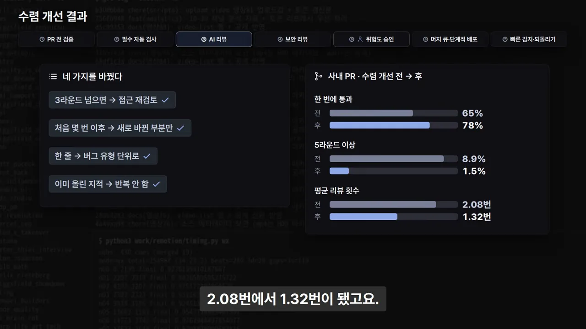
- 세 라운드를 넘으면 리뷰어가 작성자에게 한발 물러서 접근 자체를 다시 생각하라고 해요.
- 처음 몇 번 뒤에는 새로 바뀐 부분만 다시 봐요.
- 한 줄이 아니라 버그 유형을 짚어서 같은 유형을 한 번에 고치게 해요.
- 이미 올린 지적은 반복하지 않아요.
| 지표 (사내 PR) | 전 | 후 |
|---|---|---|
| 리뷰·수정 한 번에 통과 | 65% | 78% |
| 다섯 라운드 이상 걸림 | 8.9% | 1.5% |
| 통과까지 평균 리뷰 횟수 | 2.08번 | 1.32번 |
리뷰어 자체도 고리로 다듬어요. 가운데 칩이 '우리 장애가 곧 평가 세트'예요. 과거 장애와 되돌림 PR을 모으고, 그 코드를 잘 아는 엔지니어가 버그와 위치를 확인해요. 리뷰어는 매일 이 세트로 채점받고, 프롬프트든 도구든 모델이든 바꾸면 전체 세트로 다시 채점해요. 맨 아래 네 칩은 노이즈를 재는 기준이에요. 지적마다 사람이 고침, 틀림, 의도함, 상관없음 중 어떻게 반응했는지로 나눠요.
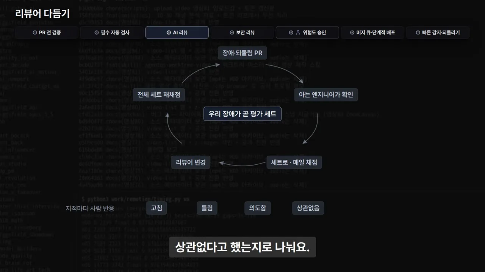
보안, 사람 승인, 머지, 되돌리기
네 번째 겹, 보안 리뷰
네 번째는 보안 리뷰예요. 머지 게이트 칸을 보면 버그 리뷰와 보안 리뷰가 나란히 있어요. 어느 쪽이든 빨간 점처럼 열린 지적이 하나라도 있으면 머지할 수 없어요. 오탐이면 짧은 이유를 달고 닫으면 되고, 나중 커밋이 문제를 고치면 지적은 저절로 풀려요.
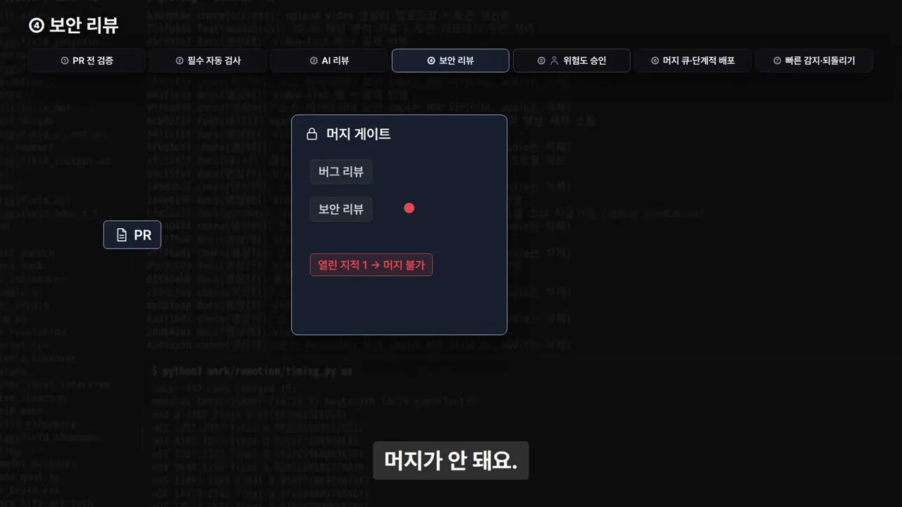
다섯 번째 겹, 위험도별 승인
드디어 사람이 등장해요. 왼쪽 분류기 판에서 갈라지는 세 갈래가 등급이에요. 오른쪽 라벨에 적힌 '사람 0, 1, 2'가 승인 인원이에요. 문서 수정과 자동 업데이트 변경은 위험이 다르니 리뷰도 달라야 한다는 뜻이에요.
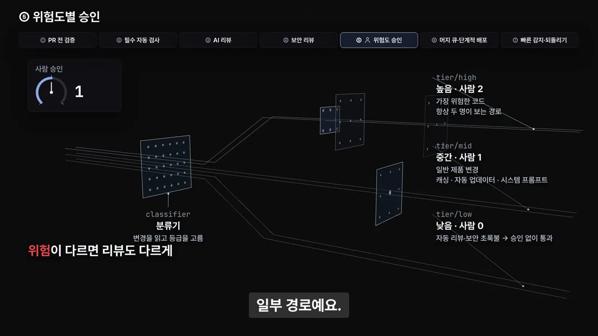
| 등급 | 대상 | 사람 승인 |
|---|---|---|
| 낮음 | 문서, 문구, 사내 전용 기능, 플래그 뒤에 숨긴 추가 변경 | 자동 리뷰와 보안 검사가 초록이면 없음 |
| 중간 | 일반 제품 변경, 캐싱·자동 업데이트·시스템 프롬프트 같은 민감한 영역 | 한 명 |
| 높음 | 가장 위험한 코드, 항상 두 명이 봐야 하는 일부 경로 | 두 명 |
여기에 규칙 네 개가 붙어요. 화면의 네 칸이 그대로예요. ①은 등급을 작성자가 아니라 변경이 정한다는 규칙이에요. 분류기가 변경을 읽어 등급을 고르고, 2차 분류기가 그래도 사람이 필요한지 한 번 더 물어요. 오너가 민감하다고 적은 경로와 CI 워크플로 파일은 무조건 사람이 봐요. ②는 가벼운 길을 신뢰 목록의 작성자만 탄다는 규칙이고, 빨간 칩처럼 에이전트 승인은 사람 승인으로 치지 않아요. ③은 에이전트에게 지시한 사람이 필수 리뷰어 중 한 명이라는 규칙이에요. 직접 타이핑한 것과 똑같이 책임져요. ④는 승인이 그 커밋에만 유효하다는 규칙이에요. 타임라인처럼 에이전트의 새 푸시나 손으로 푼 충돌이 들어오면 다시 받아야 해요.
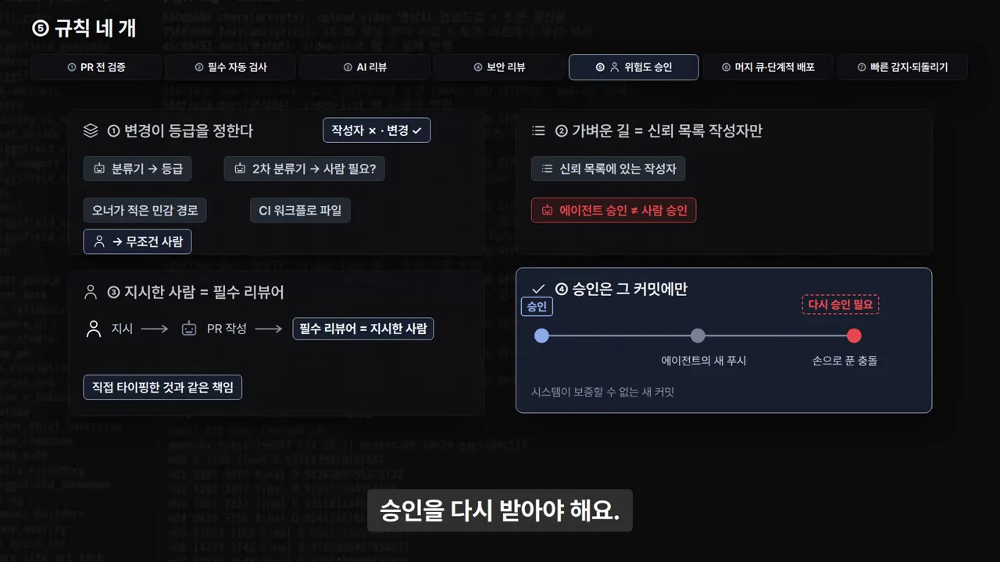
여섯 번째 겹, 머지 큐와 단계적 배포
다 통과한 PR 두 개가 동시에 들어오면 어떻게 될까요? 왼쪽 판이 각자 검사를 통과한 PR A와 PR B예요. 각자 예전 main 위에서 테스트됐기 때문에, 둘이 합쳐지는 순간 main이 깨질 수 있어요. 영상은 이걸 탑에 비유해요. 블록 두 개가 각자는 잘 맞는데 동시에 올리면 탑이 기우는 거예요.
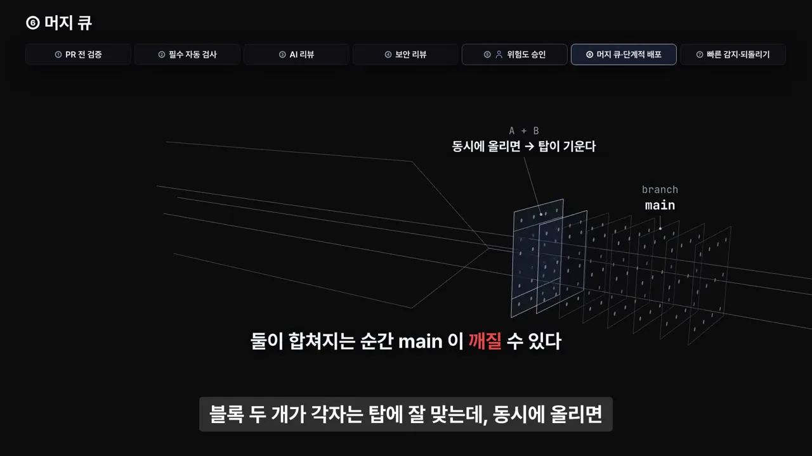
이걸 머지 큐가 막아요. 아래 '머지 큐' 판이 변경을 최신 main 위에 얹은 상태로 모든 검사를 다시 돌려요. 오른쪽 위 '머지 큐 대기' 계기판이 그 줄을 뜻해요.
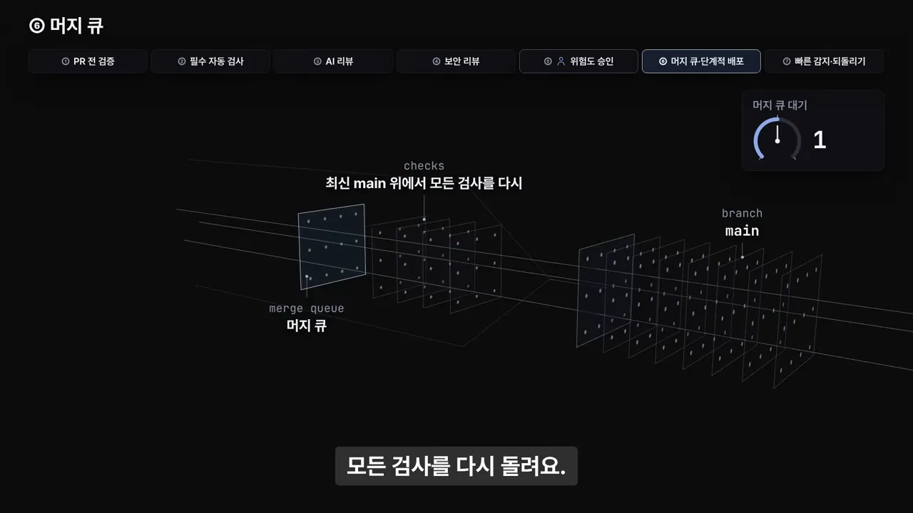
합친 뒤에도 바로 모두에게 가지 않아요. 새 기능은 보통 기능 플래그 뒤에 숨겨서 앤트로픽 직원이 먼저 써요. 워낙 많이 써서 사용자보다 먼저 문제를 찾을 때가 많아요. 공개 배포는 latest 채널이 먼저이고, stable 채널이 그 뒤를 따라가요.
일곱 번째 겹, 빠른 감지와 되돌리기
마지막 겹이에요. 왼쪽 위처럼 플래그는 배포 없이 끌 수 있어요. 장애 대응 담당은 일주일씩 돌아가며 맡아요. 오른쪽 위 일곱 칸은 장애가 나면 어느 겹이 잡았어야 했는지 따진다는 뜻이에요. 아래 칸의 '아직 없음'은 사고가 늘 때 자동으로 사람 승인을 더 받게 하는 기능이 아직 없다는 표시예요.
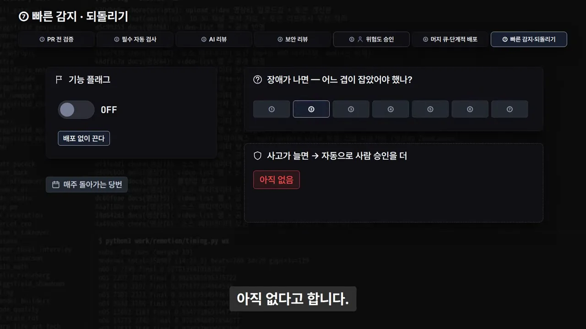
한 동료의 말로 이 겹의 태도가 정리돼요. 위쪽 칸처럼 속도를 늦추면 오류율은 떨어지지만, 대부분 모든 일을 덜 해서라는 거예요. 그래서 아래 체크 표시처럼 느려지는 대신 문제를 알아채고 고치는 속도를 올려요.
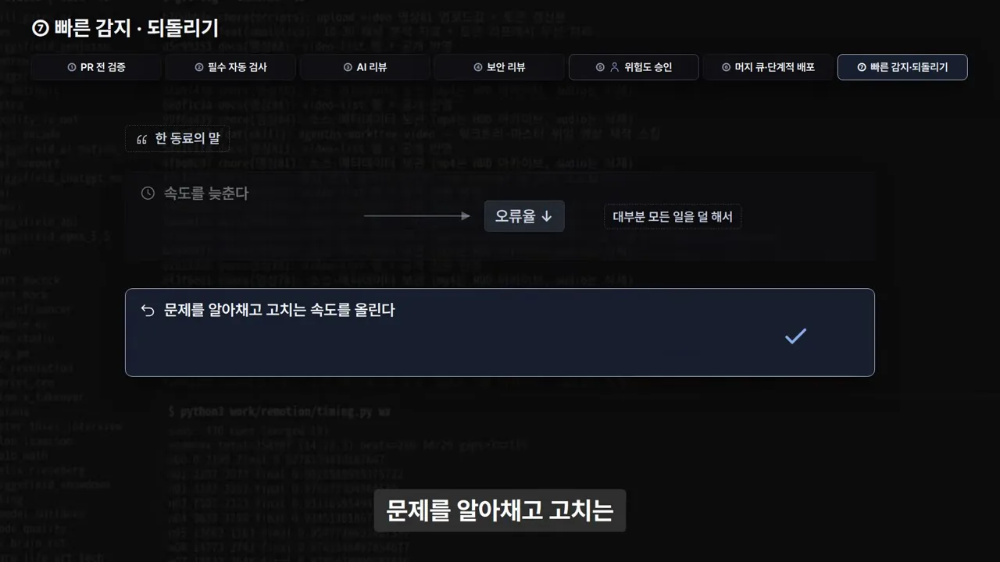
사람이 남는 곳과 내 팀에 옮기는 순서
그럼 일곱 겹에서 사람은 뭘 할까요? 일곱 칸 아래 사람 아이콘 다섯 개가 글이 꼽은 일이에요.
- 만들지 말지 — 방향과 취향과 범위를 정해요.
- 위험한 코드 — 위쪽 칩의 결제, 자동 업데이트, CI 워크플로 같은 코드를 리뷰해요.
- 설계 — 다른 사람들이 따라 할 패턴을 정하는 리뷰예요.
- 증거 읽기 — 테스트 출력, 실행한 명령과 결과, 스크린샷, 리뷰어의 지적을 읽어요.
- 책임 — 누가 타이핑했든 배포되는 변경마다 책임지는 사람이 한 명 있어요.
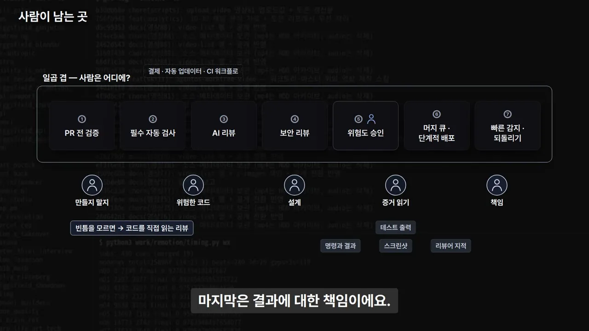
문화 규칙도 하나 있어요. 큰 글씨의 "네가 합쳤으면, 네가 고친다"예요. 작거나 중간 크기의 변경이 문제를 일으키면 보통 합친 사람이 고쳐요. 아래 두 칩이 이게 가혹하지 않은 이유예요. 변경이 작아서 되돌리기 쉽고, 플래그와 되돌리기와 단계적 배포로 대부분의 실수가 몇 분 안에 풀려요. 장애 리뷰도 사람이 아니라 시스템을 봐요.
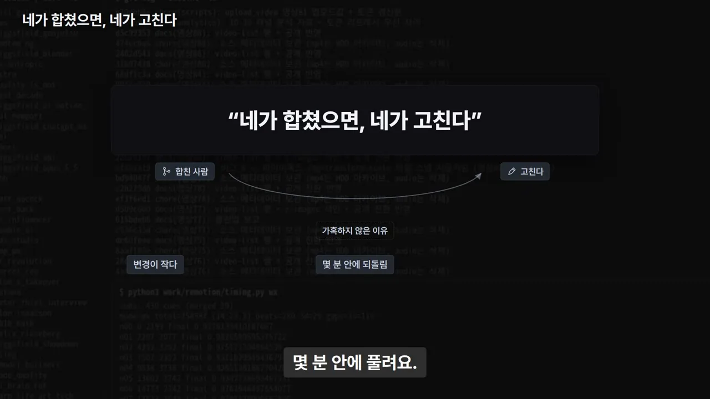
코드 리뷰엔 역할이 하나 더 있었어요. 동료의 변경을 읽으면서 팀 전체가 코드를 이해하는 일이에요. 왼쪽 빨간 칩이 그 질문이에요. 기계가 대부분 읽으면 그건 어떻게 하냐는 거죠. 답은 오른쪽 '모듈 설명서'예요. 필요할 때 Claude에게 딱 그 부분만 설명하는 글을 써 달라고 해요. 아래 칩대로 몇 분이면 되고, 오늘의 코드를 그대로 반영해요. 한 줄짜리 문구 수정을 리뷰하며 배우는 것보다 훨씬 많이 배운다는 주장이에요.
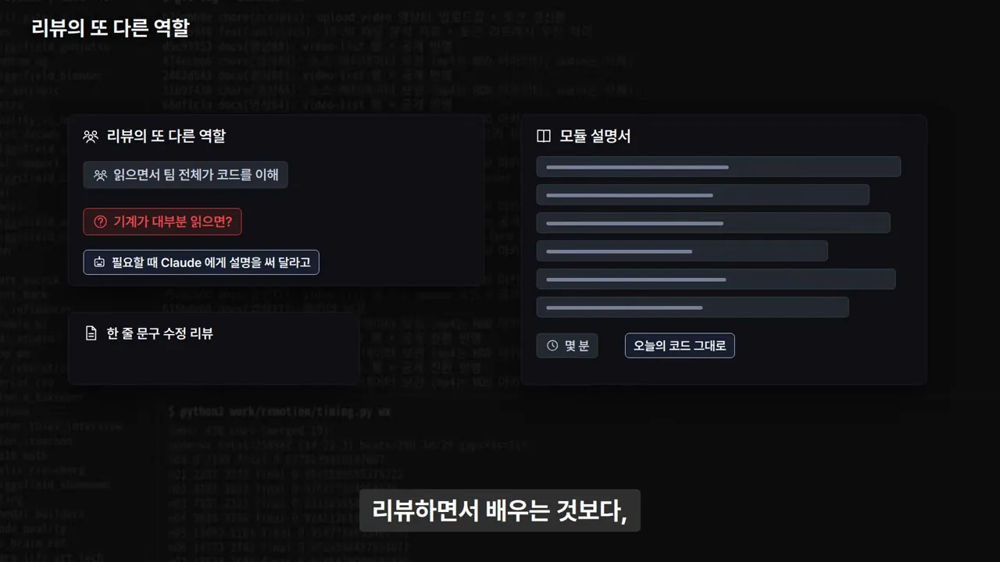
내 팀에 옮기는 순서
글이 정리한 순서는 화면의 네 칸이에요. PR 전, PR, 승인, 합친 뒤로 나뉘어요.
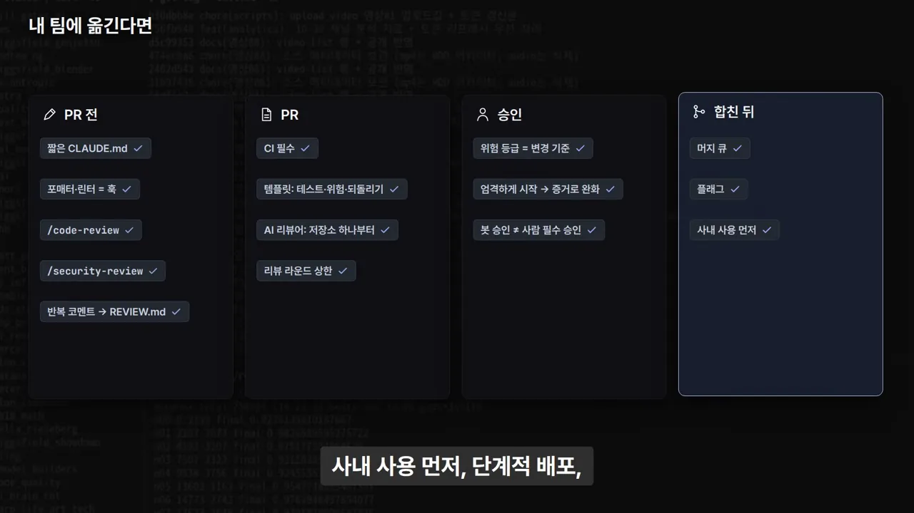
- PR 전 — 에이전트가 직접 돌릴 검사를 짧은
CLAUDE.md에 적어요. 포매터와 린터는 훅으로 걸어요. 로컬에서/code-review와/security-review를 돌리고, 반복되는 코멘트는REVIEW.md로 옮겨요. - PR — CI를 필수로 하고, 템플릿에 테스트·위험·되돌리는 법을 넣어요. AI 리뷰어는 저장소 하나에 먼저 붙여 몇 주 다듬은 뒤 넓혀요. 리뷰 라운드에 상한을 둬요.
- 승인 — 위험 등급을 변경 기준으로 적어요. 처음엔 엄격하게 시작해서 증거가 쌓이면 풀어요. 봇 승인이 사람의 필수 승인을 대신하게 두지 않아요.
- 합친 뒤 — 머지 큐, 플래그, 사내 사용 먼저, 단계적 배포, 한 번에 되돌리기를 갖춰요. 장애와 되돌림은 평가 세트로 만들어요.
같은 실수가 저절로 걸리게
글 끝부분의 요약이 이 방식 전체를 담아요. 일곱 판을 빠져나간 빨간 점 옆에 '모델 앞에 뭐가 없었나?'라는 질문이 있어요. 리뷰가 뭔가를 놓치면 이렇게 묻고, 그 답을 아래 세 칸인 CLAUDE.md, 스킬, 새 검사에 넣어요. 사람이 더 열심히 읽는 게 아니라, 같은 실수가 다음엔 저절로 걸리게 만드는 거예요.
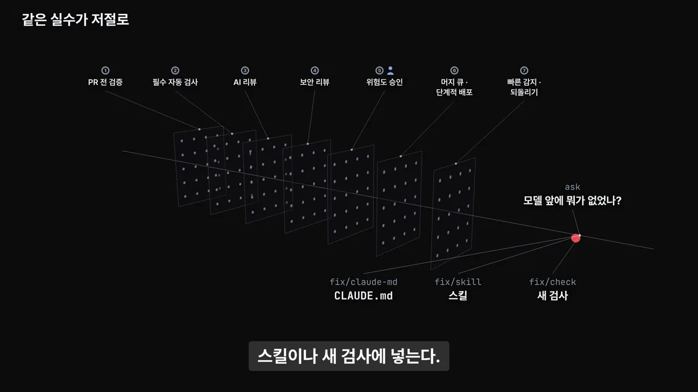
영상은 처음 질문으로 돌아가며 끝나요. 위쪽의 취소된 "사람이 이 코드를 읽었나?" 대신 아래 "무엇이 잘못될 수 있고, 어느 겹이 잡나"를 물어요. 마지막 두 칩이 목표예요. 변경 하나에 드는 사람 시간은 줄이고, 되돌림은 예전보다 늘리지 않는 것이에요.
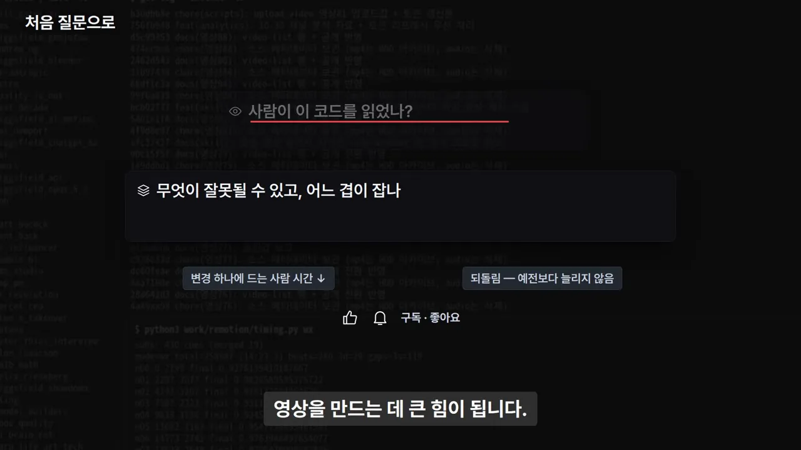